Isla de calor
Acumula calor generado por las estructuras urbanas, irradiaciones de los rayos solares, y estructuras antropogénicas. La configuración de la urbe y la geografía de la región contribuyen a este efecto. La poca vegetación genera menor evapotranspiración y mayor sequedad.
Naturaleza
Escasa vegetación con fauna urbana cosmopolita y poca fauna silvestre: palomas, roedores, insectos vectores de enfermedades y animales domésticos callejeros.
Industrias
En base a energía fósil y recursos no renovables, generan emisiones que contribuyen a la creación de un efecto invernadero local además de la generación de residuos sólidos y aguas residuales.
Aguas servidas
Lagunas de oxidación para el tratamiento de aguas residuales procedentes de hogares, comercios e industrias y de los colectores pluviales. Puede haber deficiencias en zonas de asentamiento urbanos informales. Colectores pluviales con exceso de residuos sólidos
Lluvia
Lluvias ácidas causadas por combustión de combustibles fósiles regiones fuertemente industrializadas. Escazes de lluvia déficit de evapotranspiración (temperatura elevada pocas plantas, suelos secos). Inundaciones causadas por obstrucción de colectores pluviales en zonas lluviosas.
Transporte
Saturación del parque automotor, uso de combustible generadores de monóxido de carbono, ruidos, embotellamientos, caos vehicular.
Energía fósil
Toda la energía de la ciudad basada en el uso de derivados de petróleo como ser gas, diésel, kerosene, gasolina. Uso de carbón o leña en determinadas regiones para calefacción, cocina o industria.
Metabolismo urbano SALIDAS
Genera demasiada ENTROPÍA
Como un organismo la ciudad "Excreta desechos":
Metabolismo urbano ENTRADAS
Como un organismo la ciudad "Consume recursos en exceso":
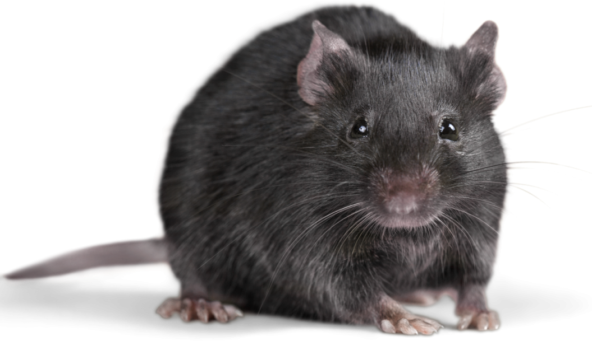
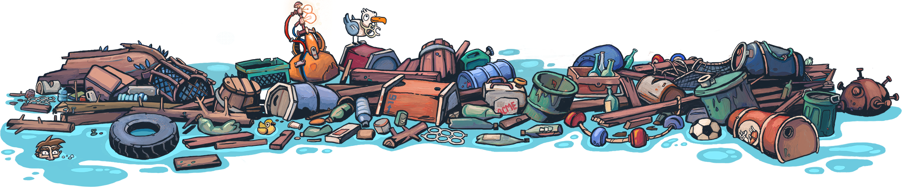
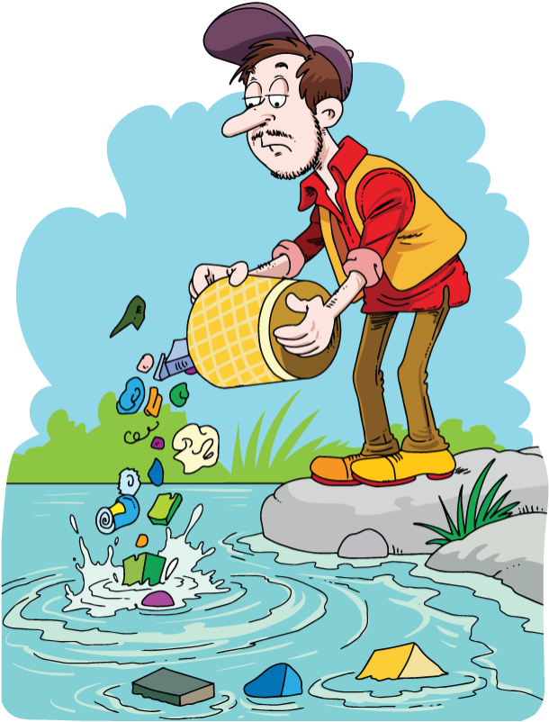
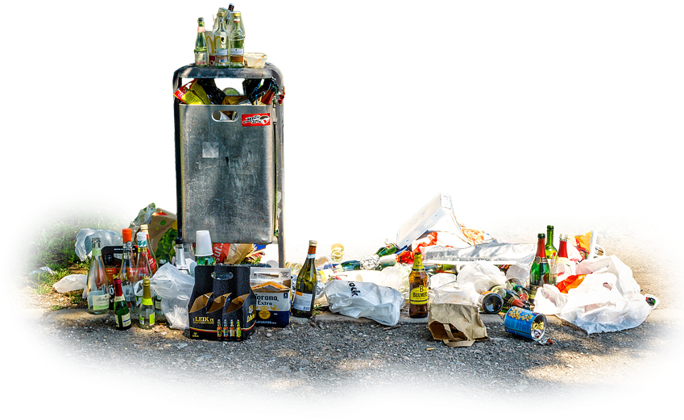

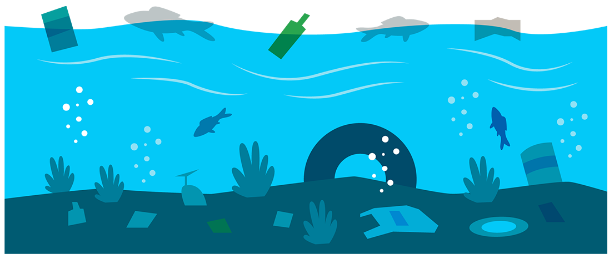
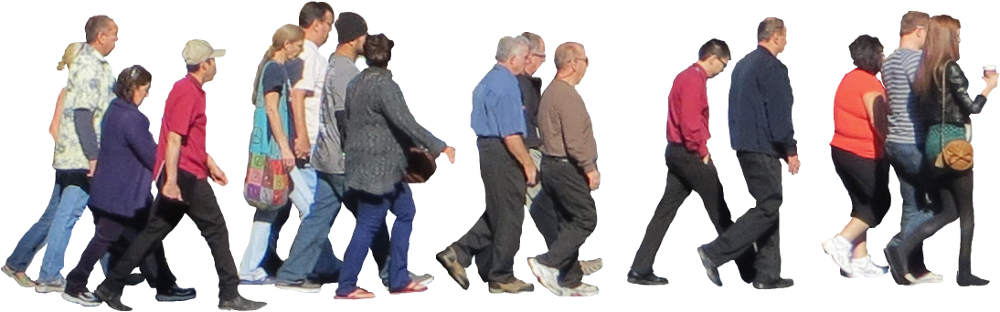
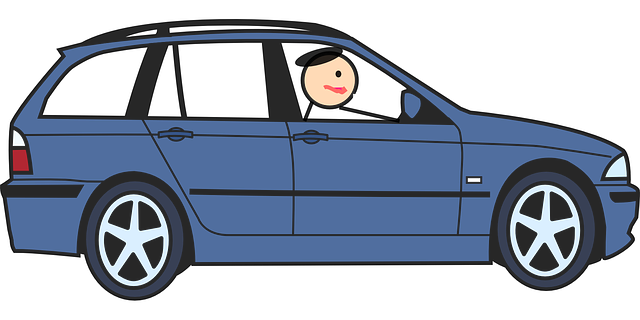
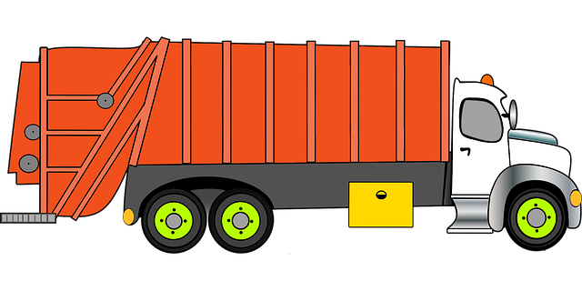
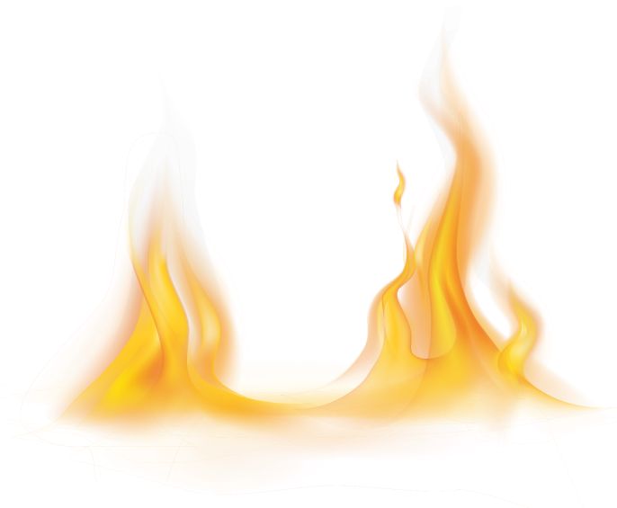
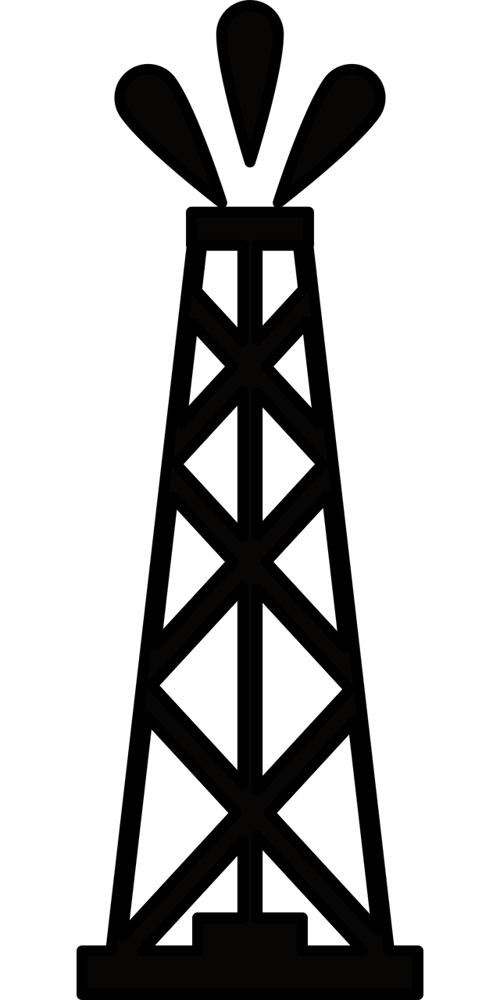

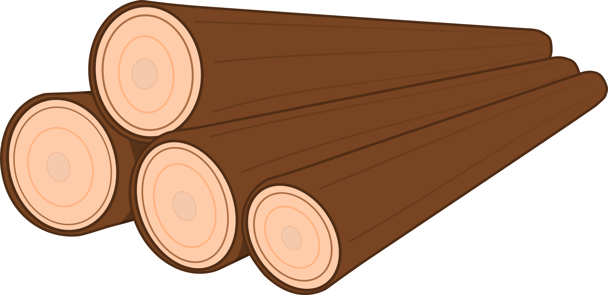
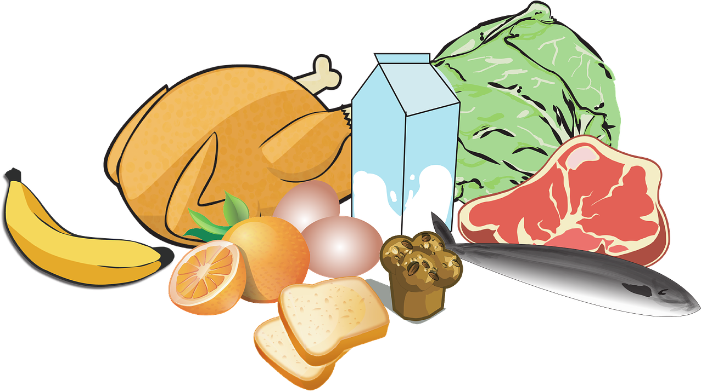
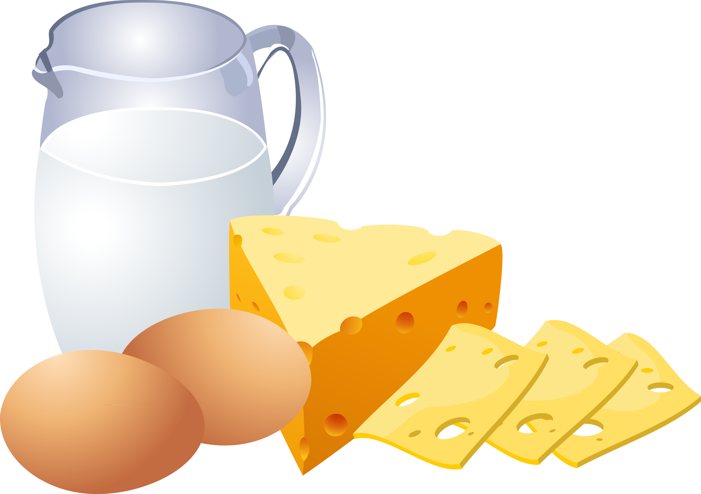
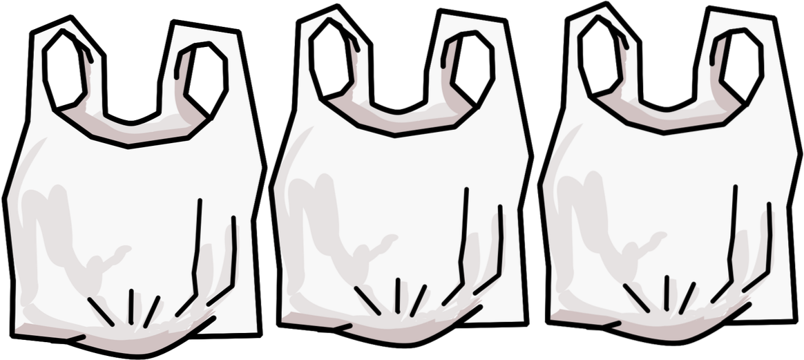
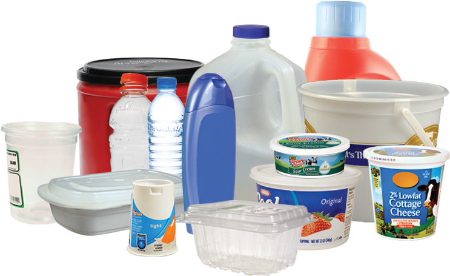
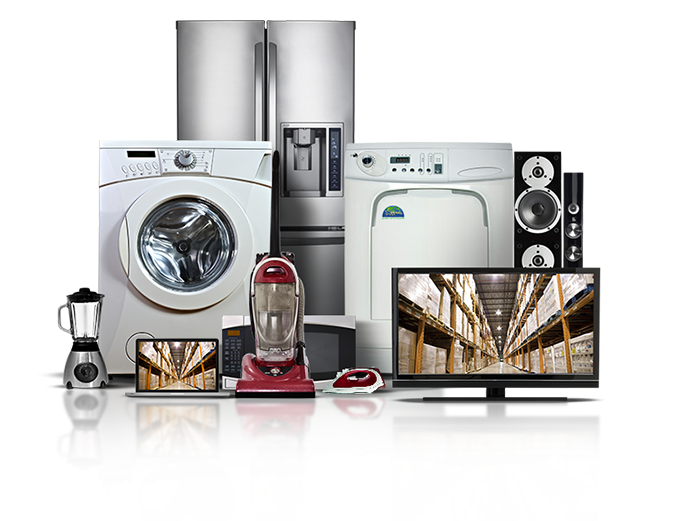